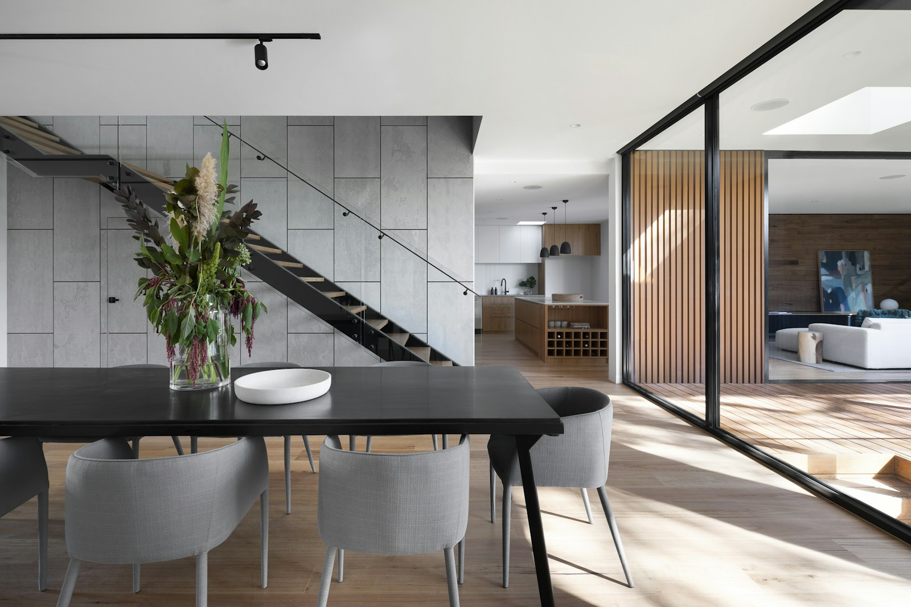

Room to
be.
We shape thoughtful places for the lives unfolding inside them.
Explore selected work
A considered collection
Selected work.
Each project begins with its setting, its light and the people who will call it their own.
Concept studies · Independent practice
How we work
01 — 03
Build less.
Notice more.
FORM / SPACE is a small architecture practice interested in the relationship between daily ritual and the built environment. We make spaces that feel inevitable: clear in plan, honest in material, generous with light.
Begin with place
Climate, context and the existing fabric set the first lines of the brief.
Choose with care
Material decisions account for touch, age, repair and the way light travels.
Leave room
A good plan makes space for routines to change and for life to feel unhurried.
Start a conversation
Have a place
in mind?
Tell us a little about it. We’ll get back to you to arrange a first conversation.
Use the enquiry form